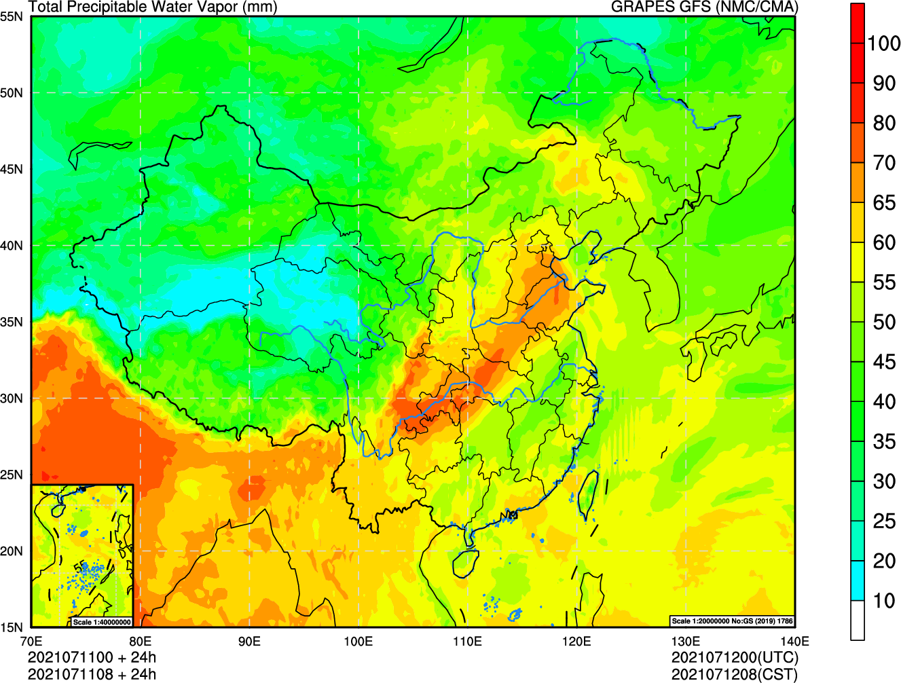
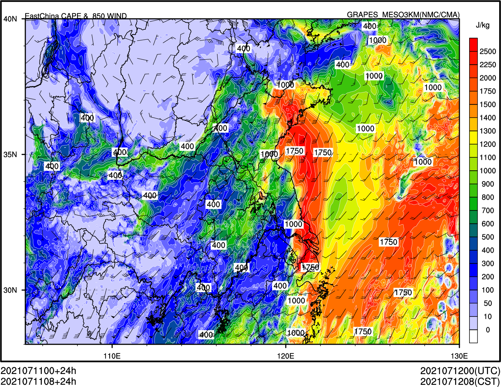
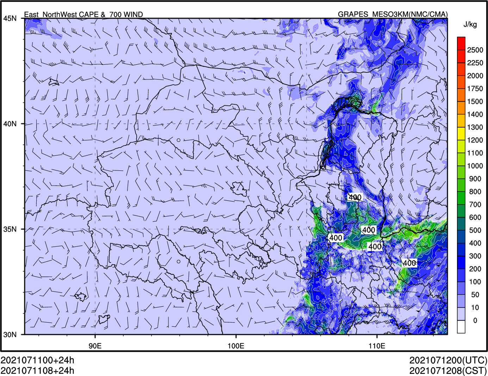
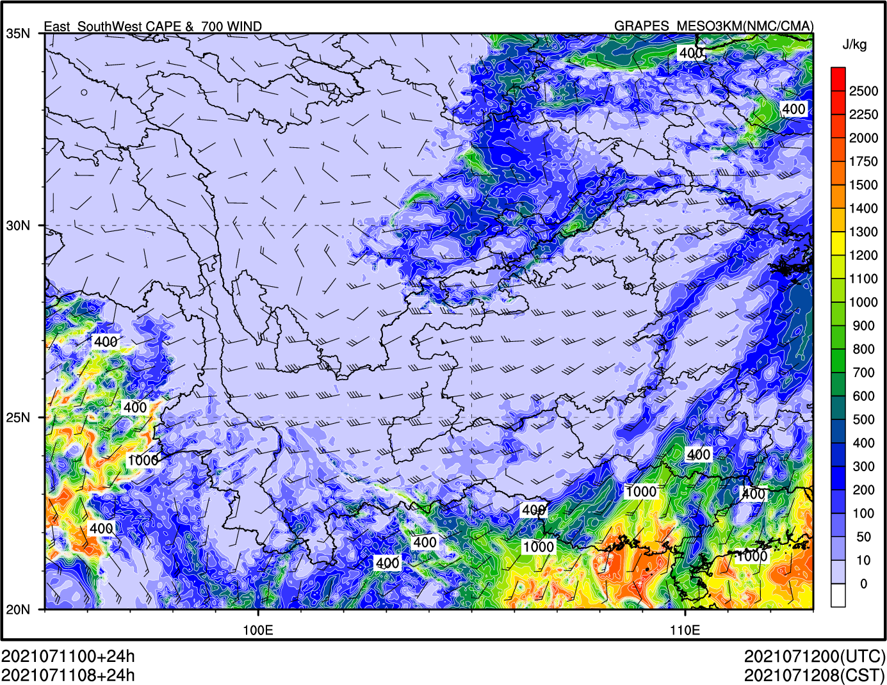
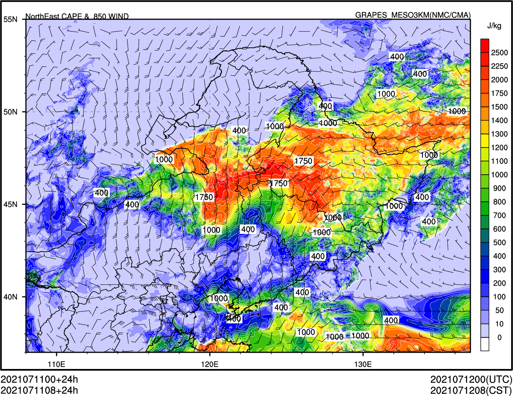
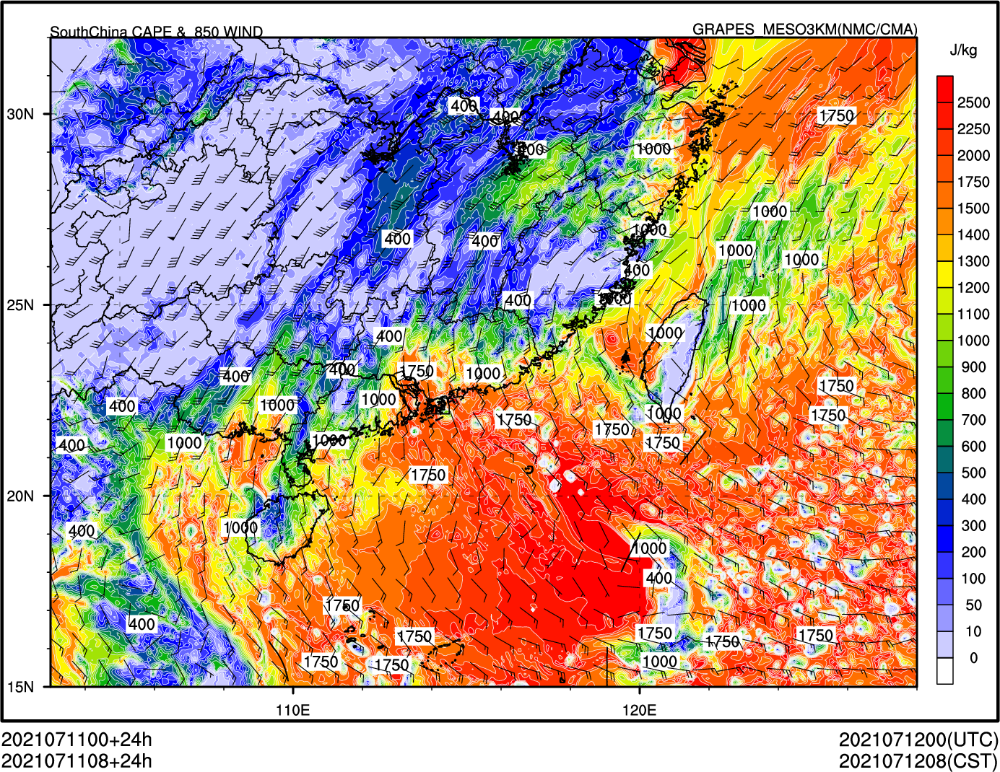
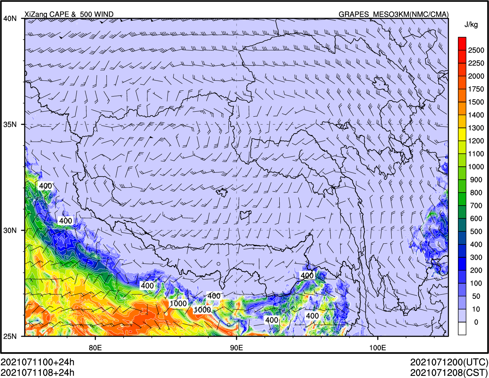
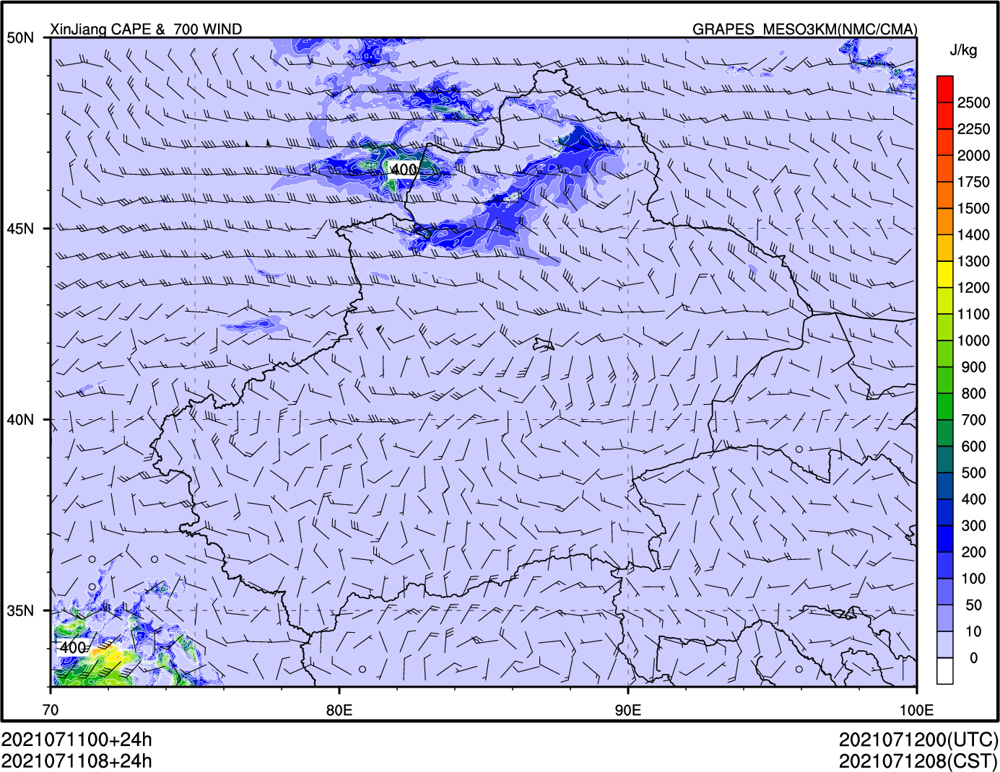
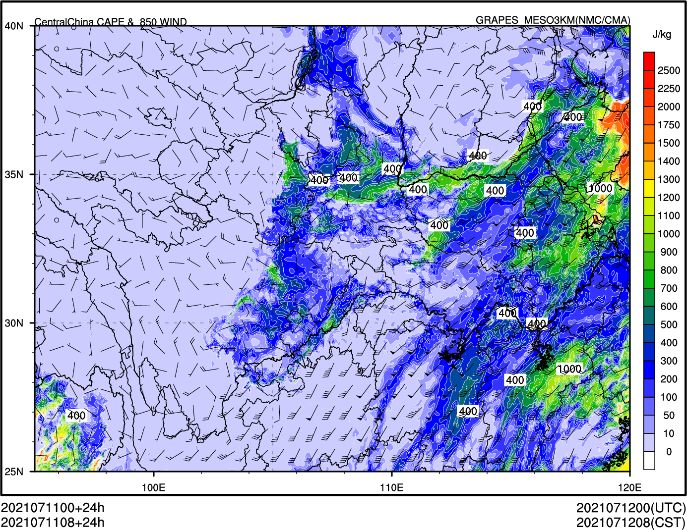

Notebook¶
sokort 支持在 Jupyter Notebook 中直接显示绘图结果。
如果生成单张图片，则直接显示。
[1]:
from sokort import show_plot
show_plot("grapes_gfs_gmf", "pwat_sfc_an_aea", "2021071100", "24h")

如果生成多张图片，则使用 ipywidgets 标签页展示 (文档暂时无法显示)
[2]:
show_plot("grapes_meso_3km", "area_cape_850wind", "2021071100", "24h")








